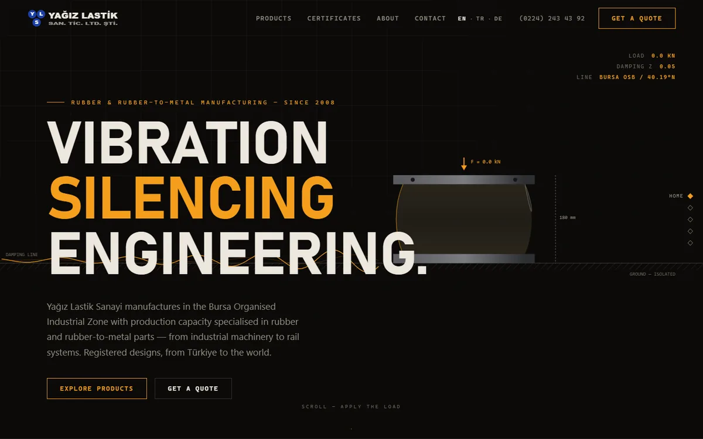
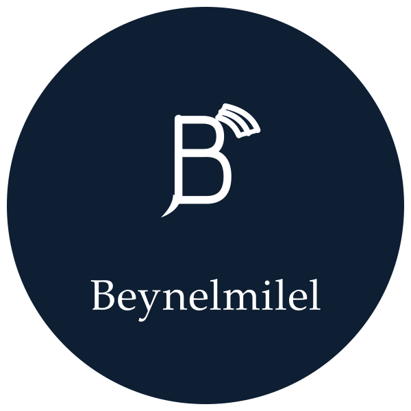
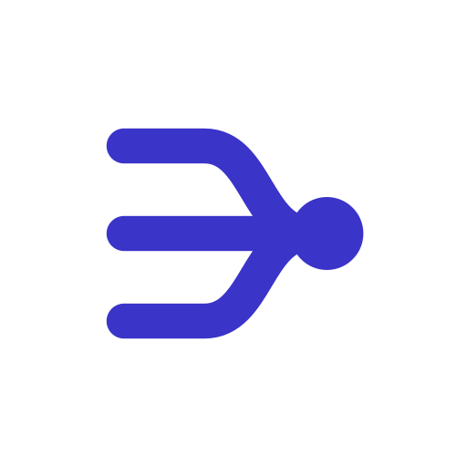
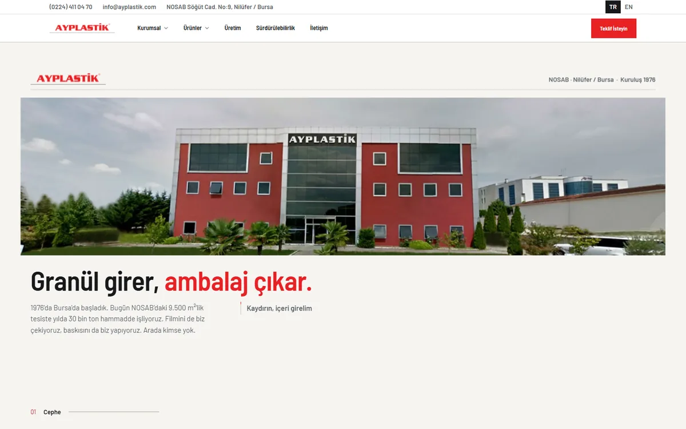
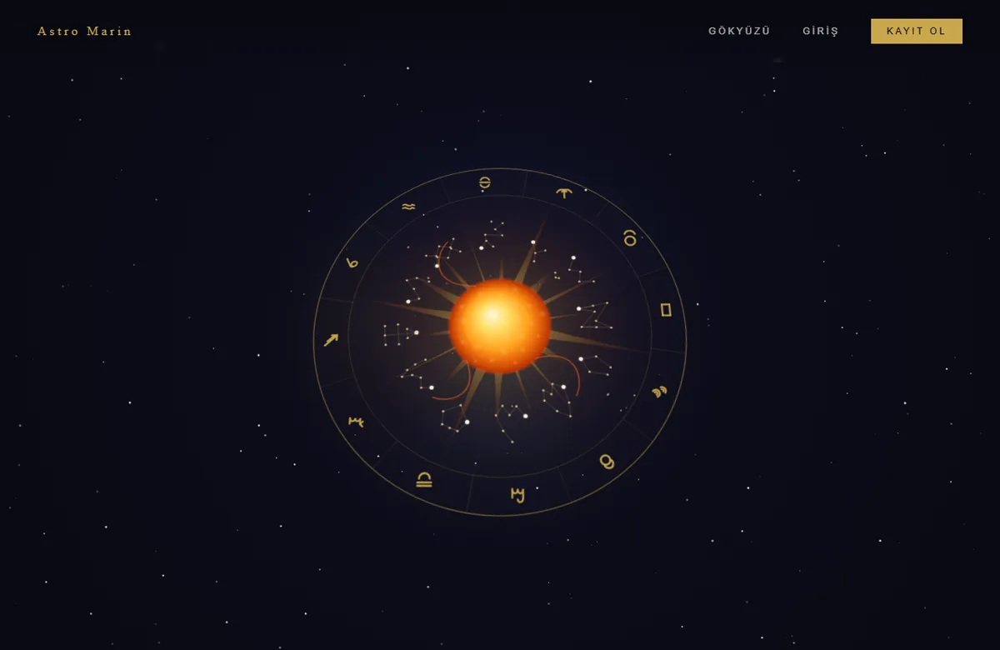

Yayında

Yazılım Geliştirici & Kurucu · Beynelmilel
İstanbul, Türkiye
İşletmeniz için sistem, web sitesi ve reklam — kendi ürünlerimizi kurduğumuz özenle.
Beynelmilel, Bursa'da kurulmuş, İstanbul'dan çalışan bir yazılım stüdyosu ve ajans.
Sattığımız her şeyi önce kendimiz için kurduk: pilates stüdyoları için yönetim sistemi kurarken çok kiracılı mimariyi, Erasmus öğrencileri için sosyal ağ kurarken moderasyon ve veri güvenliğini, yapay zekâ ürünleri kurarken maliyet-performans dengesini kendi ürünlerimizde öğrendik.
Müşteri işine bu birikimle geliriz.
Evet dediğimiz işe tasarımdan yayına uçtan uca sahip çıkarız.
Satır bazlı erişim denetimi ve ayrık yetki tabloları her projenin sıfırıncı gününde vardır.
Tasarım dosyası değil, yayında çalışan ürün teslim ederiz.
Her türlü sistem ve profesyonel web sitesi; reklamı da biz yapıyoruz.
İşletmenize özel yönetim sistemi: üyeler, randevu, ödeme, personel — tek panelde.
WhatsApp randevu botu: menü, 24 saat ve 2 saat önce hatırlatma, iptal, yönetim paneli.
Vitrin site: 4-6 sayfa, mobil uyumlu, temel SEO, KVKK ve çerez metinleri.
Vitrin+: İngilizce/Almanca, ürün kataloğu, teklif formu, Google Business kaydı.
Bakım: güncelleme, yedek, izleme.
Teknik denetim: güvenlik ve KVKK teknik raporu.

FlowDesk
Klinikten fabrikaya: tek çatı altında işletme yönetimi.

Klinik, stüdyo, oto yıkama ve atölye gibi randevulu işletmelerin ortak ihtiyaçlarını tek platformda toplayan çok kiracılı yönetim çatısı. Studia'da kanıtlanan desenlerin genelleştirilmiş hâli.
Her sektöre ayrı yazılım yazmak yerine ortak omurgayı bir kez ve doğru yazmak: üyeler, takvim, ödeme, personel. Sektör farkları modül olarak eklenir.






Kendi adımızla canlıya taşıdıklarımız.
Henüz yayında olmayan, masamızda büyüyen işler.
Masaüstü DJ kurulumu ve Auto-Mix motoru: şarkı adlarını yaz, DJ kalitesinde mix al. Canlı Auto DJ, efekt, loop, MIDI.
Gelmeyen müşteri, kaybolan gündür. Küçük oto yıkamacılar için WhatsApp'tan randevu alan ve otomatik hatırlatma gönderen sistem.
Atıştırmalıklar için Letterboxd: 53 bin ürünlük katalog, puan ve yorum.
Bağlantı analizi, coğrafi-zamansal sorgular ve öznitelik tabanlı erişim denetimi sunan veri füzyon platformu. En iddialı Ar-Ge projemiz.
Görevler, projeler, piyasalar ve gerçek bir Claude terminali — tek masaüstü uygulamasında. Kişisel komuta merkezi.
Bir proje fikrini alıp yapılandırılmış, uygulanabilir bir derin plana çeviren masaüstü aracı.
Piyasa yapıcılığı, ETF arbitrajı ve istatistiksel arbitrajı sanal parayla deneyip ölçen quant eğitim simülatörü.
Müşteri adayı araştıran, rakip hareketlerini raporlayan ve SEO içeriği üreten üç komut satırı ajanı.
Yağız Ertuğrul Kaya. İstanbul'da yaşıyorum; Bursa'da kurduğumuz Beynelmilel'i ekibimle İstanbul'dan yürütüyoruz.
Sattığımız her şeyi önce kendimiz için kurduk; bir işi tasarımdan altyapıya, yayından güvenliğe kadar uçtan uca üstleniriz.
Yeni bir iş için en hızlı yol WhatsApp.
Bir fikriniz, bir siparişiniz ya da sadece bir sorunuz varsa yazın; aynı gün döneriz.
WhatsApp'tan yaz